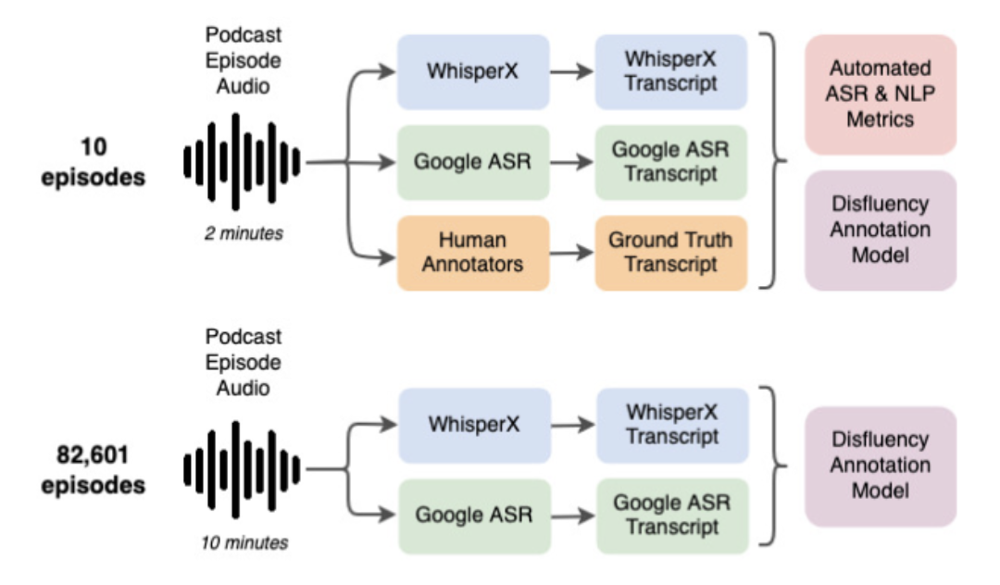
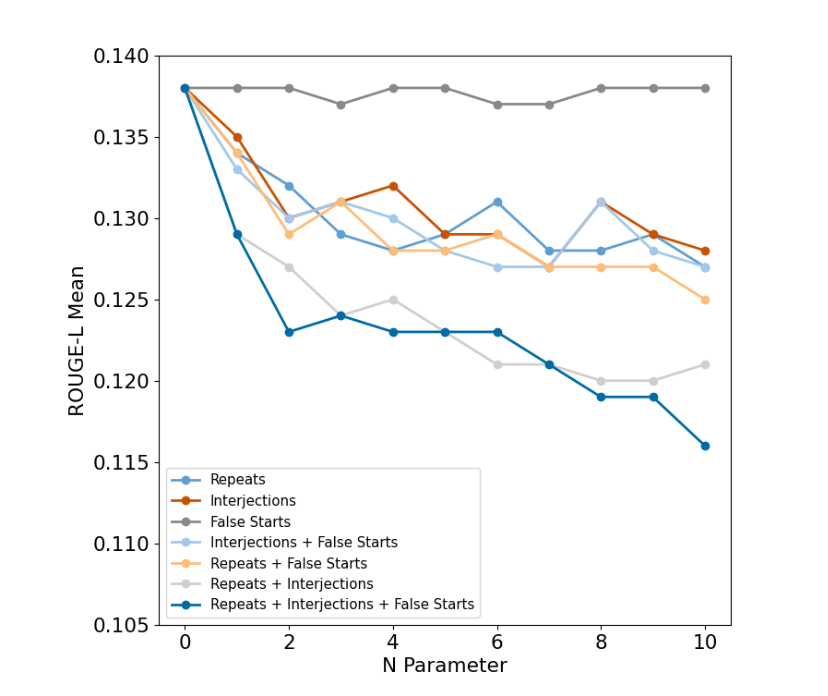
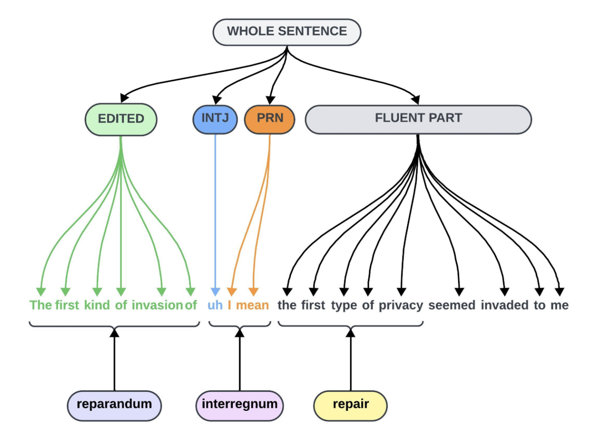
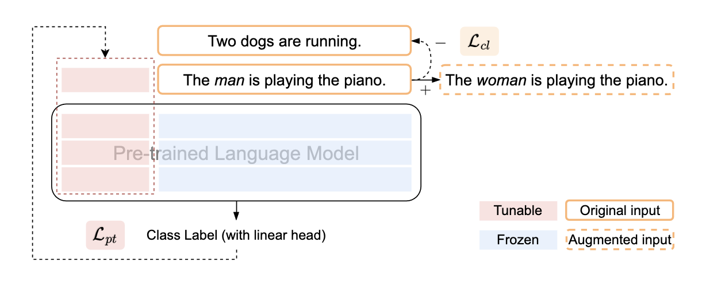
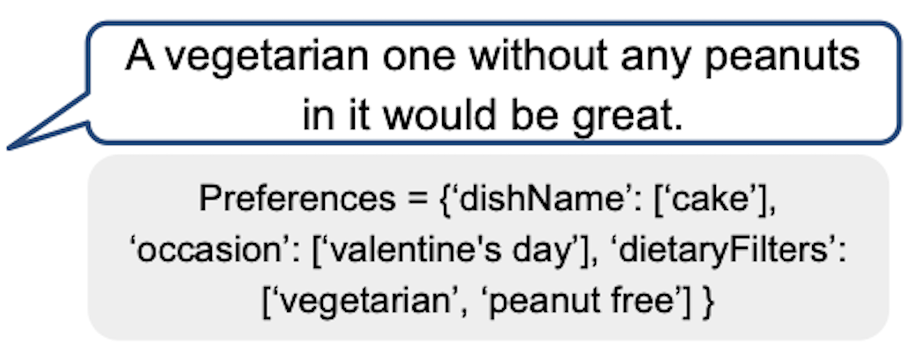

Maria Teleki
PhD Student in Computer Science at Texas A&M University.
Howdy! I’m a third-year PhD Student in Computer Science at Texas A&M University (gig em!  ) in InfoLab, advised by Prof. James Caverlee.
Previously, I graduated from Texas A&M University with a B.S. in Computer Science and a minor in Mathematics.
) in InfoLab, advised by Prof. James Caverlee.
Previously, I graduated from Texas A&M University with a B.S. in Computer Science and a minor in Mathematics.
My work focuses on disfluency in spoken content -- How do disfluencies impact LLM task performance? How does the choice of ASR system impact a model’s ability to identify disfluencies? I also work on algorithms that identify and mitigate gender bias in language models. Keywords: Disfluency, Large Language Models, Gender Bias
The best way to contact me is through email: mariateleki@tamu.edu. Please reach out if you have any questions or want to know more about our work!
News
| Oct 7, 2024 | Gave a talk at the Texas Tech University - School of Veterinary Medicine VBMA Club! Check it out here: The Other AI: An Intuitive Understanding of Artificial Intelligence. |
|---|---|
| June 4, 2024 | Our work was accepted to INTERSPEECH! |
| April 19, 2024 | Had a great time meeting and learning from so many awesome people at the CRA-WP Grad Cohort for Women in Minneapolis, MN! |
| Mar 14, 2024 | We had 2 papers accepted to LREC-COLING on disfluency and language modeling! |
Publications
|  | Comparing ASR Systems in the Context of Speech Disfluencies Maria Teleki, Xiangjue Dong, Soohwan Kim, and James Caverlee INTERSPEECH 2024 Paper Code Project Website Poster ISCA Archive Link
In this work, we evaluate the disfluency capabilities of two automatic speech recognition systems -- Google ASR and WhisperX -- through a study of 10 human-annotated podcast episodes and a larger set of 82,601 podcast episodes. We employ a state-of-the-art disfluency annotation model to perform a fine-grained analysis of the disfluencies in both the scripted and non-scripted podcasts. We find, on the set of 10 podcasts, that while WhisperX overall tends to perform better, Google ASR outperforms in WIL and BLEU scores for non-scripted podcasts. We also find that Google ASR's transcripts tend to contain closer to the ground truth number of edited-type disfluent nodes, while WhisperX's transcripts are closer for interjection-type disfluent nodes. This same pattern is present in the larger set. Our findings have implications for the choice of an ASR model when building a larger system, as the choice should be made depending on the distribution of disfluent nodes present in the data.
@inproceedings{teleki24_interspeech,
|
|  | Quantifying the Impact of Disfluency on Spoken Content Summarization Maria Teleki, Xiangjue Dong, and James Caverlee LREC-COLING 2024 Paper Code Poster Video Slides ACL Anthology Link
Spoken content is abundant -- including podcasts, meeting transcripts, and TikTok-like short videos. And yet, many important tasks like summarization are often designed for written content rather than the looser, noiser, and more disfluent style of spoken content. Hence, we aim in this paper to quantify the impact of disfluency on spoken content summarization. Do disfluencies negatively impact the quality of summaries generated by existing approaches? And if so, to what degree? Coupled with these goals, we also investigate two methods towards improving summarization in the presence of such disfluencies. We find that summarization quality does degrade with an increase in these disfluencies and that a combination of multiple disfluency types leads to even greater degradation. Further, our experimental results show that naively removing disfluencies and augmenting with special tags can worsen the summarization when used for testing, but that removing disfluencies for fine-tuning yields the best results. We make the code available at https://github.com/mariateleki/Quantifying-Impact-Disfluency.
@inproceedings{teleki-etal-2024-quantifying-impact,
|
|  | DACL: Disfluency Augmented Curriculum Learning for Fluent Text Generation Rohan Chaudhury, Maria Teleki, Xiangjue Dong, and James Caverlee LREC-COLING 2024 Paper Code Poster Video Slides ACL Anthology Link
Voice-driven software systems are in abundance. However, language models that power these systems are traditionally trained on fluent, written text corpora. Hence there can be a misalignment between the inherent disfluency of transcribed spoken content and the fluency of the written training data. Furthermore, gold-standard disfluency annotations of various complexities for incremental training can be expensive to collect. So, we propose in this paper a Disfluency Augmented Curriculum Learning (DACL) approach to tackle the complex structure of disfluent sentences and generate fluent texts from them, by using Curriculum Learning (CL) coupled with our synthetically augmented disfluent texts of various levels. DACL harnesses the tiered structure of our generated synthetic disfluent data using CL, by training the model on basic samples (i.e. more fluent) first before training it on more complex samples (i.e. more disfluent). In contrast to the random data exposure paradigm, DACL focuses on a simple-to-complex learning process. We comprehensively evaluate DACL on Switchboard Penn Treebank-3 and compare it to the state-of-the-art disfluency removal models. Our model surpasses existing techniques in word-based precision (by up to 1%) and has shown favorable recall and F1 scores.
@inproceedings{chaudhury-etal-2024-dacl-disfluency,
|
|  | Co2PT: Mitigating Bias in Pre-trained Language Models through Counterfactual Contrastive Prompt Tuning Xiangjue Dong, Ziwei Zhu, Zhuoer Wang, Maria Teleki, and James Caverlee Findings of EMNLP 2023 Paper Code ACL Anthology Link
Pre-trained Language Models are widely used in many important real-world applications. However, recent studies show that these models can encode social biases from large pre-training corpora and even amplify biases in downstream applications. To address this challenge, we propose Co2PT, an efficient and effective debias-while-prompt tuning method for mitigating biases via counterfactual contrastive prompt tuning on downstream tasks. Our experiments conducted on three extrinsic bias benchmarks demonstrate the effectiveness of Co2PT on bias mitigation during the prompt tuning process and its adaptability to existing upstream debiased language models. These findings indicate the strength of Co2PT and provide promising avenues for further enhancement in bias mitigation on downstream tasks.
@article{DBLP:journals/corr/abs-2310-12490,
|
|  | Howdy Y’all: An Alexa TaskBot Majid Alfifi, Xiangjue Dong, Timo Feldman, Allen Lin, Karthic Madanagopal, Aditya Pethe, Maria Teleki, Zhuoer Wang, Ziwei Zhu, James Caverlee Alexa Prize TaskBot Challenge Proceedings 2022 Paper Amazon Science Link
In this paper, we present Howdy Y’all, a multi-modal task-oriented dialogue agent developed for the 2021-2022 Alexa Prize TaskBot competition. Our design principles guiding Howdy Y’all aim for high user satisfaction through friendly and trustworthy encounters, minimization of negative conversation edge cases, and wide coverage over many tasks. Hence, Howdy Y’all is built upon a rapid prototyping platform to enable fast experimentation and powered by four key innovations to enable this vision: (i) First, it combines a rules, phonetic matching, and a transformer-based approach for robust intent understanding. (ii) Second, to accurately elicit user preferences and guide users to the right task, Howdy Y’all is powered by a contrastive learning search framework over sentence embeddings and a conversational recommender for eliciting preferences. (iii) Third, to support a variety of user question types, it introduces a new data augmentation method for question generation and a self-supervised answer selection approach for improving question answering. (iv) Finally, to help motivate our users and keep them engaged, we design an emotional conversation tracker that provides empathetic responses to keep users engaged and a monitor of conversation quality.
@inproceedings{University2022,
|
Education
|
Texas A&M University Ph.D. Computer Science College Station, TX 2022-Present |
(2022-2026) Dr. Dionel Avilés ’53 and Dr. James Johnson ’67 Fellowship in Computer Science and Engineering (Spring 2024) CRA-WP Grad Cohort for Women (Spring 2024) Department Travel Grant |
|
Texas A&M University B.S. Computer Science College Station, TX 2017-2022 |
(2017-2021) President's Endowed Scholarship (2018) Bertha & Samuel Martin Scholarship (Oct-Dec 2018) STEM and Stars Research Participant in the College of Education |
Service
Work
|
RetailMeNot Software Engineering Intern Austin, TX May 2021 - August 2021 |
Used Amazon SageMaker and spaCy to get BERT embeddings for concatenated coupon titles and descriptions. Analyzed the relationship between each dimension of the BERT embeddings and uCTR using Spearman's correlation coefficient, and used principal component analysis to find dimensions with stronger correlations. Created a plan to evaluate these dimensions as possible features for the Ranker algorithm--which does store page coupon ranking--using offline analysis and A/B testing. Taught Data Science Guilds about neural networks, word embeddings, and spaCy. |
|
The Hi, How Are You Project Volunteer Austin, TX May 2020 - Dec 2020 |
Developed the “Friendly Frog” Alexa Skill with the organization at the beginning of the COVID-19 pandemic to promote mental health by reading uplifting Daniel Johnston lyrics and the organization’s “Happy Habits.” |
|
RetailMeNot Software Engineering Intern Austin, TX May 2020 - August 2020 |
Developed the “RetailMeNot DealFinder” Alexa Skill to help users activate cash back offers. Presented on Alexa Skill Development at the Data Science Sandbox with both Valassis and RetailMeNot teams. |
|
Silicon Labs Applications Engineering Intern Austin, TX May 2019 - August 2019 |
Designed and implemented the Snooper library using pandas to (1) systemize IC bus traffic snooping (I2C, UART, SPI, etc.) across different snooping devices (Saleae, Beagle, etc.), and (2) translate the traffic to a human-readable form for debugging purposes. Responded to multiple tickets from customers using the library. |
Teaching
|
TAMU CSCE 485 Graduate Mentor Aug 2023 - Dec 2023 |
Mentored undergraduate student, Soohwan Kim, to work on a disfluency-related research project for CSCE 485 Directed Studies class. |
|
TAMU CSCE 121, 181 Peer Teacher Dec 2018 - Dec 2019 |
Helped students with programming homework and answered conceptual questions by hosting office hours and assisting at lab sessions for CSCE 121 and 181. Created notes with exercises and examples to work through as a group during CSCE 121 reviews. |
|
The Y (YMCA) Afterschool Instructor Sep 2016 - July 2017 |
Taught multiple weekly classes at local elementary schools for the YMCA Afterschool program, and authored instruction manuals (Lego Mindstorms Robotics and Crazy Science) for the program. |
|
The Y (YMCA) Camp Counselor & Robotics Instructor May 2016 - Aug 2016 |
Tenderfoot (K-1st) summer camp counselor in the mornings, and Lego Mindstorms robotics instructor in the afternoons: designed curriculum, created competition, helped kids engage in the Engineering Process, and worked with them on how to problem-solve in a group setting. |
More
| Talks |
(Fall 2024) The Other AI: An Intuitive Understanding of Artificial Intelligence @ Texas Tech University - School of Veterinary Medicine VBMA Club. |
| Certifications |
(Spring 2023) G.R.A.D. Aggies Basic Professional Development Certificate |
| Relevant Coursework |
CSCE 689 Large Language Models CSCE 670 Information Storage & Retrieval CSCE 625 Artificial Intelligence CSCE 489 Recommender Systems CSCE 421 Machine Learning CSCE 435/735 Parallel Computing ECEN 314 Signals and Systems MATH 411 Mathematical Probability MATH 308 Differential Equations MATH 311 Topics in Applied Math I (Linear Algebra) PHIL 482 Ethics and Engineering |